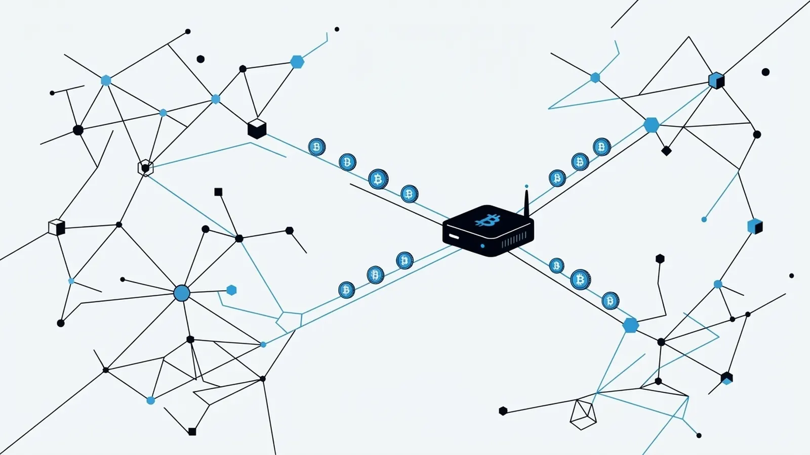

Every protocol has a heartbeat. In Bitcoin After Life, that heartbeat is the Will-Executor network: independent servers around the world that store signed, time-locked inheritance transactions and broadcast them when their delivery date arrives. Without executors, there is no protocol. And here's the part most people miss: anyone can run one — and get paid in Bitcoin for doing it.
This article explains what running a Will-Executor actually involves, how the economics work, and why we believe it is one of the most interesting long-term, Bitcoin-native earning opportunities nobody is talking about yet.
What a Will-Executor actually does
Strip away the name and a Will-Executor is a beautifully simple service. It:
- Receives fully signed, time-locked inheritance transactions from BAL plugin users.
- Stores them safely — sometimes for years.
- Broadcasts each transaction to the Bitcoin network on its delivery date.
That's all. The server cannot modify the transactions (they are already signed), cannot execute them early (Bitcoin's consensus rules reject them before the locktime), and cannot see anything beyond what the transaction itself reveals. It is infrastructure, not a fiduciary.
Technically, the requirements are modest. You don't need a datacenter or specialized hardware — the BAL server is open source, and a reliable, always-on machine with modest resources is enough to start. Once running, you can list your server on the public WeList directory, where plugin users discover and select executors for their wills.
The economics: paid on success, in Bitcoin, forever
The incentive design is deliberately simple and entirely on-chain:
- Every inheritance transaction created by the BAL plugin includes a fee output for the Will-Executor.
- That fee is paid only when the transaction is broadcast and confirms on the blockchain. No execution, no payment. The incentive to store carefully and broadcast punctually is built into the money itself.
- If several executors hold the same inheritance, the first to broadcast it wins the fee. This race is a feature: it makes every executor eager to be online, honest, and fast on delivery day.
- Fees are denominated in Bitcoin — not in a token, not in points, not in a promise. As Bitcoin's value grows over the years between a will's creation and its execution, the real-world value of every stored will grows with it.
That last point deserves emphasis. A Will-Executor accumulates a portfolio of future-dated, Bitcoin-denominated claims. Each one is a small, probabilistic, long-duration asset — closer to holding a book of very patient options than to running a conventional service. The protocol is designed for inheritances that may execute ten, twenty, thirty years from now. The executor business is a bet on longevity: the protocol's, and your server's.
Why the network needs you
Decentralized inheritance has a bootstrapping problem that is the mirror image of Bitcoin's own early days: the system is only as strong as its redundancy.
The BAL plugin creates one transaction per selected Will-Executor precisely because only one of them needs to survive until the delivery date. Redundancy is the guarantee. But that guarantee gets stronger with every independent operator who joins:
- More executors = more resilience. Geographic, jurisdictional, and operational diversity means no single outage, seizure, or bankruptcy can break the chain of inheritance.
- More executors = more credibility. Users choosing servers from the WeList want to see a living, competitive directory, not a monoculture.
- More executors = earlier fees. A larger network attracts more users, and more users mean more wills stored — the fee pipeline starts flowing sooner for everyone.
If you believed in running a Bitcoin node when it was "useless," or mining when it was a hobby, this will feel familiar: critical infrastructure, run by volunteers-turned-stakeholders, rewarded later than expected and more than expected.
Getting started
- Read What Will-Executors are in the manual for the full mental model.
- Follow Running a Will-Executor for the setup walkthrough — the code is MIT-licensed and open for audit.
- Add your server to the WeList so users can find and select you.
- Stay online, stay honest, and let time — and the timelocks — do the rest.
The long game
Bitcoin turned "being your own bank" from a slogan into software. Bitcoin After Life is doing the same for "leaving something behind." But protocols don't run themselves: behind every inheritance that arrives exactly on schedule, decades after it was written, there will be a server that kept its promise — and collected its fee.
That server could be yours.
Bitcoin After Life is open source and Bitcoin-only. Explore the code on Gitea, browse the executor directory at welist.bitcoin-after.life, and read the full documentation at bitcoin-after.life/docs.